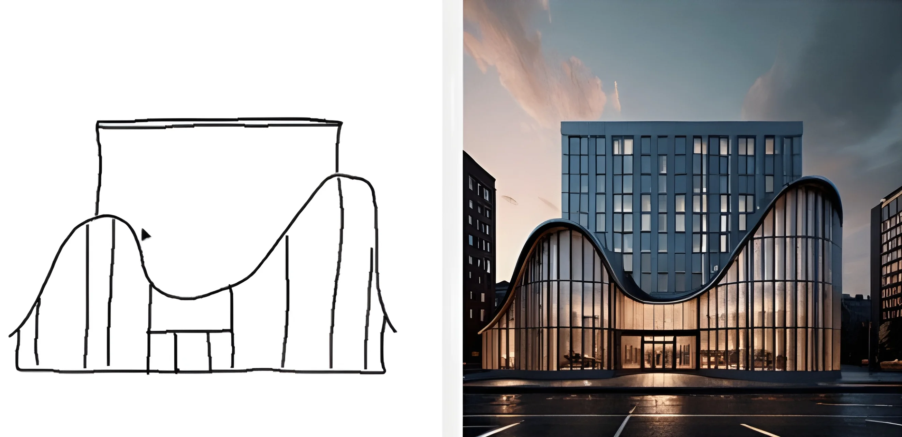
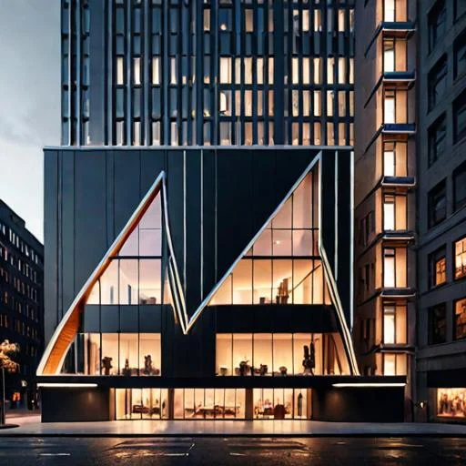
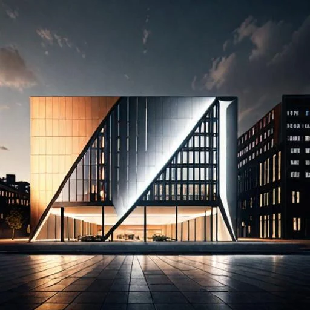
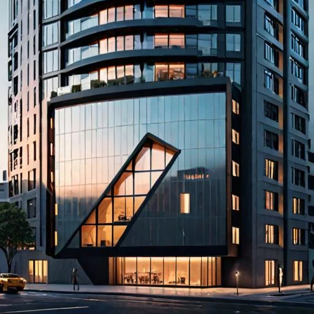
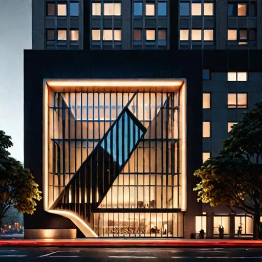
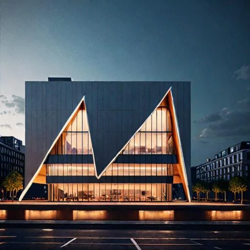
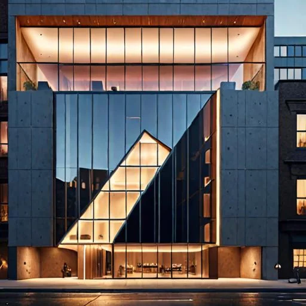

ControlNet for structure
Edge / scribble conditioning lets the generation follow the sketch.
Stable Diffusion XL + ControlNet

Generative AI / Sketch to RenderA personal project that transforms rough sketches into photorealistic outputs and supports inpainting edits, built on open-source Stable Diffusion XL pipelines with ControlNet for sketch-based guidance and a Tkinter interface. The sketch — converted to inverted grayscale — conditions generation via StableDiffusionXLControlNetPipeline; an inpainting mode lets you paint a red mask on the result to refine specific regions. Everything can be run locally.
Pure text-to-image is too unconstrained for early architectural exploration. You need the image to follow a specific massing, line, or plan — without losing the freedom of generative.
Edge / scribble conditioning lets the generation follow the sketch.
Higher-resolution base for materials and lighting.
Tkinter app keeps the loop fast: sketch → generate → refine.
User draws on a white canvas (brush size slider, Ctrl+Z undo, eraser toggle); Pillow ImageDraw mirrors strokes internally.
Subject / Design Features / Environment text fields + negative prompt.
Sketch converted to inverted grayscale; ControlNet (xinsir/controlnet-scribble-sdxl-1.0) guides generation via controlnet_conditioning_scale.
StableDiffusionXLControlNetPipeline with SDXL base SG161222/RealVisXL_V4.0_Lightning renders the preview.
Inpainting mode — user paints a red mask on regions to change.
AutoPipelineForInpainting (diffusers/stable-diffusion-xl-1.0-inpainting-0.1) refills masked areas.
Export in multiple formats (JPEG, PNG, etc.).
Real-time inference triggers with customizable subject, design-feature, and environment prompts.
Paint a mask over the generated image and re-fill the masked area through the SDXL inpainting pipeline.
Undo (Ctrl+Z) and an eraser / brush toggle in sketch mode.
Negative-prompt support alongside the main prompt.
Save outputs as JPEG, PNG, and other formats.
Explore the material
behind the project.
Presentations, research, and supporting material from the project repository, alongside the original project media.
36 cells · 4 saved charts. Read the analysis, code, and recorded results.

Enlarge ↗docs
View on GitHub (opens in a new tab)
Enlarge ↗docs
View on GitHub (opens in a new tab)
Enlarge ↗docs
View on GitHub (opens in a new tab)
Enlarge ↗docs
View on GitHub (opens in a new tab)Read the project overview, setup notes, and technical documentation.
5 images
Select an image to explore.




Have an idea, a challenge, or a different perspective?
I’d love to hear it.
{kind=link}
{kind=link}
{kind=link}
{kind=link}
{kind=link}
{kind=link}
{kind=link}